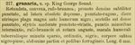

Click on images to enlarge
{kind=link}

Paropsis granaria, description
Name
Trachymela granaria (Chapuis, 1877)
Type specimen
Not examined.
Original description
[Original description shown in figure, translated from Latin using ChatGPT, 04/2026]
Rounded, convex, reddish-brown; pronotum more densely and finely punctate, at the sides obscurely depressed, punctate-rugose, on each side of the disc with a large black spot before the humeri; scutellum fairly densely punctate; elytra moderately punctate-striate, with smaller punctures intermixed, reddish-brown with narrow black suture, the humeral spot, and the minute, scattered, regularly arranged tubercles are black; underside of the body blackish-pitchy; abdomen in part and the legs ferruginous.
Length 6 mm. King George Sound
Notes
Blackburn (1896) deals with T. granaria as part of his 'subgroup iii' (i.e., those species without "strongly marked characters", whose greatest height is not or scarcely in front of the middle of the elytral margin and whose elytra are not depressed under the humeral callus). Within that group, he characterises it as:
(1) elytra with a distinct postbasal impression on disc;
(2) the elytral margin (viewed from the side) straight or but little sinuous;
(3) elytral puncturation (and especially its seriation) much obscured by irregular transverse rugulosity;
(4) elytra not marked with a common dark blotch behind the scutellum;
(5) elytral verrucae of hind declivity all closely placed in rows.
T. granaria is one of several species with a very similar dorsal colour pattern that occur in S.W. Western Australia, and is likely to be Ta163. See discission under T. tincticollis for more details.
References
Chapuis, F. 1877, "Synopsis des espèces du genre Paropsis", Annales de la Société Entomologique de Belgique (Comptes-rendus), vol. 20, 67-101 (page 95).
Copyright © 2026. All rights reserved.